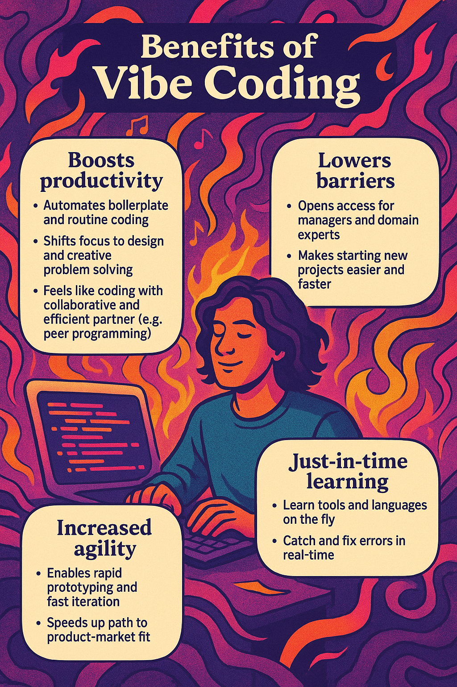
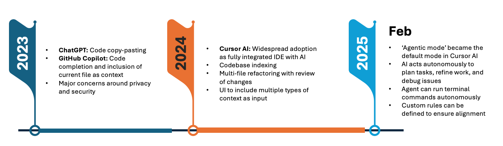
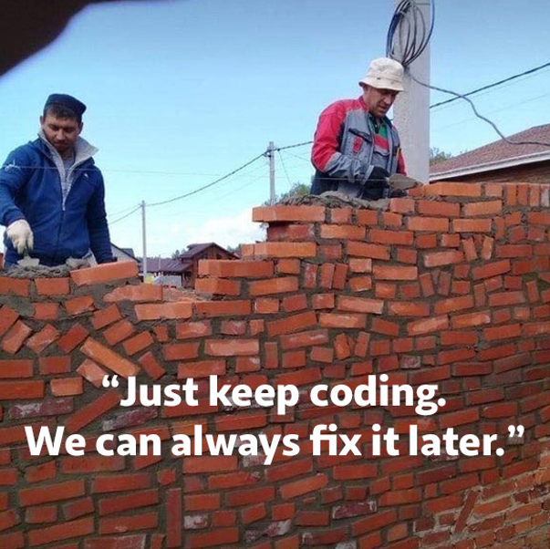
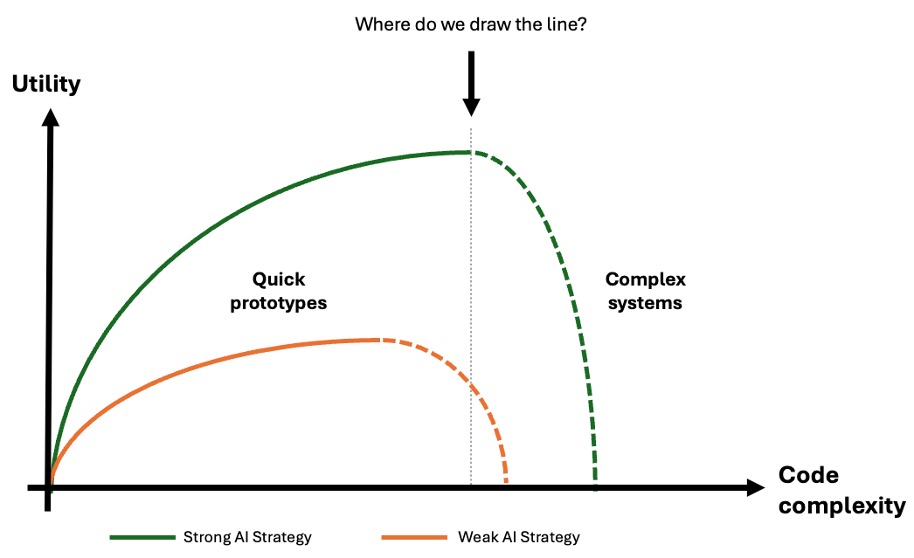
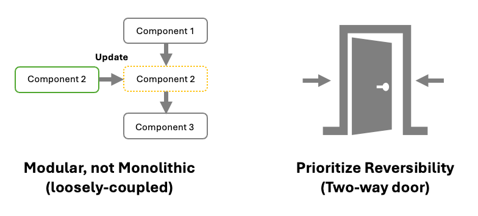
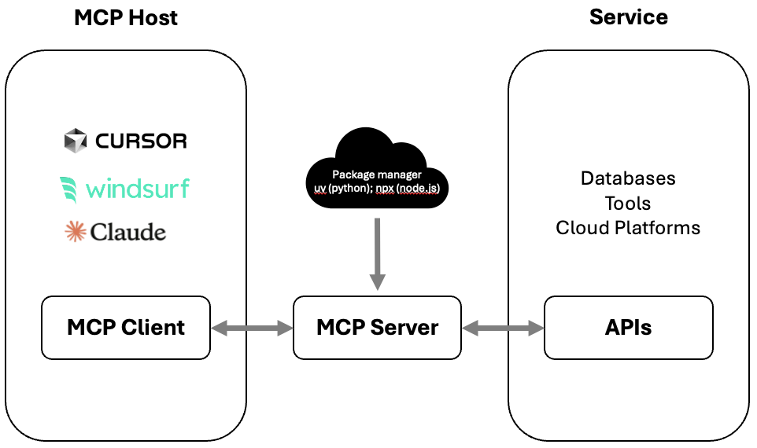

The emergence of Vibe Coding

‘Vibe Coding’ has definitely been one of the biggest hypes in the past month — and nowhere is this more visible than in the startup world. In Mar 2025, Jared Friedman, Managing Partner at leading startup accelerator Y Combinator, noted:
“95% of their codebases (were) generated by AI… Every one of these people is highly technical, completely capable of building their own products from scratch. A year ago, they would have built their product from scratch — but now 95% of it is built by an AI.”
Having tried to keep up with fast-evolving AI tools in both development and creative work, it’s been a whirlwind, to say the least. Personally, tools like Cursor AI have been a game-changer. It’s dramatically boosted my productivity, lowered the barriers to starting new projects, and enabled just-in-time learning for new tools and languages across the software stack.
The Reality Check
However, in its current state, this now (in)famous meme probably sums up what Vibe Coding looks like today:

Why? Well, here’s a list of AI-induced issues I’ve faced with the current state of technology:
Table: AI-induced Vibe Coding issues
| No. | Problem/Pitfall | Description |
|---|---|---|
| 1 | Unintended changes | Files are rewritten during regeneration, which removes or alters functionality that was previously working |
| 2 | Monolithic code | Generated code often violates clear separation of concerns, leading to tightly-coupled components that are harder to maintain and debug |
| 3 | Violates DRY principles | Generated code repeats logic unnecessarily, increasing technical debt and the risk of bugs |
| 4 | Security vulnerabilities | Code may expose API keys, hardcode credentials, or fail to implement proper authentication |
| 5 | Unverified dependencies | Introducing libraries or frameworks that may not be necessary, or that have known vulnerabilities |
| 6 | Limited context window | Large files (e.g., data) can exceed the model’s context window and affect speed |
| 7 | Limitations with complex systems | Lacks understanding of large-scale production systems with intricate logic, applying patchwork that results in unmaintainable code |
Some of these issues are already starting to get better as technology improves (for example, no. 6). However, many larger organizations simply cannot afford to take on these risks — especially those operating in regulated environments, critical infrastructure, or with stringent security and compliance requirements. More critically, Vibe Coding also introduces human-induced risks that are arguably even harder to manage. This painfully funny quote from Ars Technica sums it up perfectly:
“Vibe coding is all fun and games until you have to vibe debug.”
Table: Human-induced Vibe Coding issues
| No. | Problem/Pitfall | Description |
|---|---|---|
| 1 | Lack of Explainability | Developers often don’t understand the logic or complexities behind AI-generated solutions |
| 2 | Blind Trust | Sloppy checks even by experienced developers can result in flaws that are difficult to detect until they cause real-world failures |
| 3 | Amplifies poor organizational alignment | Unclear strategy and standards (e.g., system architecture, business requirements) can quickly lead to chaos |
These risks are real — both from the current limitations of AI tooling and human shortcomings that come with a new way of building software. At least from my vantage point, I still see a large gap between what’s working for startups or solo devs, and what’s viable for enterprise teams. This can be visualized as a curve showing the declining utility of AI-generated code as it gets too complex:

As you can see from the green vs. orange curves, the utility that Vibe Coding provides to an organization will largely depend on the strength of it’s AI strategy. Accordingly, each will have to clearly define the threshold of complexity beyond which Vibe Coding should not be relied on (vertical line). Given how rapidly the landscape and tooling is changing (often in a matter of weeks!), these curves will be constantly shifting as well. Organizations need more than just access to the latest tools to stay competitive. They need clear strategies and strong organizational alignment for AI adoption.
Strategies for working with AI
“Zero to one will be great for vibe coding where founders can ship features very quickly. But once they hit product-market-fit, they’re still going to have really hardcore systems engineering… and you need to hire very different kinds of people.” -Diana Hu, Y Combinator Group Partner
A successful AI strategy isn’t just about tools — it’s deeply tied to people, processes, and organizational culture. To make Vibe Coding sustainable, we need to build the scaffolding around it. Below are the core strategies I believe are essential for Vibe Coding to succeed within large enterprises.
Strategy 1: Boost Productivity
Talking to different developers, I’ve found opinions on Vibe Coding to be pretty polarizing. Some love the speed and creative freedom it unlocks, while others worry about the trade-off — sacrificing understanding for speed. One big concern is that it robs junior developers of the ‘hard work’ needed to build deep expertise — the kind that comes from wrestling with complexity, not skipping past it.
But like it or not, it is clear the game is changing.
AI won’t replace developers — it’s changing what being a developer means. As we move into the future, those who use AI effectively will increasingly outperform those who don’t. We’re already seeing the next generation learn in very different ways: coding through projects, exploring the full stack, and learning tools and languages just-in-time.
Organizations should tap into this momentum to boost productivity across teams. When used right, AI can help developers:
- Build cross-functional skills
- Break down silos
- Reduce friction in collaboration and handovers
- Improve agility by enabling rapid prototyping and iteration
But to really benefit, teams need to shift their mindset from “I built this from scratch” to “I orchestrated this with precision.” This means that developers need to get comfortable acting as reviewers, editors, and system architects — not just as authors of every line.
This also means that AI adoption must be more than a bolt-on. It needs to be tightly woven into existing workflows and aligned with the organization’s tech stack and culture. Key considerations include:
- Ensuring compatibility with current infrastructure
- Avoiding tool sprawl and overlapping functionality
- Embedding AI to reduce friction rather than introduce it
To make this shift practical, organizations need clarity on where AI adds the most value today — and how to support those workflows with the right tools. That means evaluating not just features, but fit: how well these tools integrate into your existing tech stack, respect data privacy, and perform reliably under production conditions. Beyond functionality, enterprise adoption hinges on factors like security, ease of use, and the availability of commercial support. The table below outlines a few AI-ready tasks that are already gaining traction in modern development cycles.
Table: AI-ready tasks and tooling in software development (Mar 2025)
| No. | Task | Description | Role | Suggested Tools |
|---|---|---|---|---|
| 1 | Gather Requirements | - Capture and summarize user meetings - Iterative discovery of functionality, architecture, edge cases, and constraints (e.g., security, scalability, compliance) |
Product Manager | Fireflies AI: Transcribe and summarize discussions ChatGPT / Gemini / Claude: Technical exploration, generate targeted questions |
| 2 | Create the Product Requirements Document (PRD) | - Co-write user stories and technical boundaries - Break down by feature into structured prompts for development |
Product Manager | Confluence / Notion: Collaborative documentation ChatGPT: For prompt structuring and refinement |
| 3 | Set Up Development Environment | - Scaffold projects and repositories - Define coding/testing guardrails |
Developer | Cursor / Windsurf: Bootstrapping, configuration, and rules |
| 4 | Feature Slicing | - Implement features vertically (end-to-end) in narrow, testable increments - Continuous documentation (e.g., docstrings, commits, READMEs) |
Developer | Cursor / Windsurf: AI-integrated development |
| 5 | Modularize and Refactor | - Identify reusable logic and extract into modules - DRY check to detect duplication and suggest abstractions |
Developer | Cursor / Windsurf: AI-integrated development |
| 6 | Continuous Testing | - Write and automate unit, integration, and end-to-end tests - Embed testing into CI pipelines |
QA / Test Engineer | Codium AI (Qodo): Agentic test generation |
Strategy 2: Codify Guardrails
If Strategy 1 is about unlocking speed and creativity, then Strategy 2 is about ensuring stability and safety. To make Vibe Coding sustainable within complex environments, teams need clear rules of the road. This doesn’t mean slowing teams down with bureaucracy. It means scaling good judgment across the organization.
Think of this as installing bumpers on a bowling lane — not to restrict creativity, but to protect the integrity of the game.
Here’s what that could look like in practice:
Establish Architectural Leadership
Strong architectural leadership is essential to guide the development of sustainable and trustworthy solutions. This involves:
- Long-term Perspective: Avoiding rework by adhering to first principles and designing for longevity
- Flexibility: Creating modular systems that enable reversible decisions
- Resilience: Ensuring security and the ability to recover quickly from failures

Implement Rule-Based Systems
Tools like Cursor and Windsurf offer rule-based systems that can address many AI-induced Vibe Coding issues highlighted earlier. These rules can be applied at various levels:
- Code style and patterns: Enforce consistent coding standards
- Tech stack usage: Define approved technologies and frameworks
- Dependency management: Regulate the inclusion of third-party libraries
- Agent workflows: Standardize AI agent behaviors and interactions
Custom rules can also serve as the ‘organizational DNA’ that are ‘automatically applied’ to prompts. These can be tailored to:
- Company-wide standards
- Specific project requirements
- Domain-specific needs (e.g., data engineering, application development)
- Individual repositories
Regular alignment and reviews are crucial to keep these standards up-to-date. Many curated lists (e.g., Awesome CursorRules) have also been sprouting up, and can serve as useful starting points.
Looking Ahead: Will Every System Need to Speak Agent?
As the landscape of AI tooling matures, another shift is already underway — not just in how we code, but in how our systems communicate with AI agents. This isn’t just about speeding up development anymore; it’s about making software that AI can understand and interact with directly.
In late 2024, Anthropic introduced the Model Context Protocol (MCP) — an open protocol that’s been described as a kind of USB-C for AI applications. Much like how REST and GraphQL standardized web APIs, MCP aims to standardize the way systems expose their capabilities to large language models (LLMs) and AI agents.

At its core, MCP allows a software system to declare “Here’s what I can do” in a machine-readable format — essentially giving agents a playbook they can follow. This opens up massive potential: imagine an LLM agent that can navigate across your enterprise stack, triggering workflows, querying data, and even modifying infrastructure without needing to reverse-engineer your system through prompts.
The rise of MCP is ushering in a new interface paradigm — one where AI doesn’t just read and generate code, but operates your systems directly.
You can already explore an early library of MCP Servers, each representing a gateway for AI agents to interact with different apps and services. The implications are wide-ranging:
- Software vendors may soon be expected to offer MCP compatibility by default
- Internal platforms could become AI-accessible via standardized interfaces
- New industries may emerge around MCP infrastructure — not unlike the explosion of web development in the early internet era
That said, this new frontier comes with real risks. MCP Servers can grant deep access to critical systems — including the ability to make admin-level changes. As with any emerging standard, security and trust will be critical differentiators. Look for community-vetted projects with strong reputations (e.g., Discord/Reddit presence, Stars, Contributors) before adopting or deploying MCP integrations.
Final Thoughts
While some may dismiss Vibe Coding as a fad, I think it’s a clear signal of how quickly the software development landscape and traditional roles are changing. Just as the “webmaster” role splintered into a range of digital specialties (e.g., UX/UI, SEO, front/back-end developer), developers and managers alike must soon adapt to new expectations.
Speed alone doesn’t build resilient systems. If organizations want to harness the creative power of AI without descending into chaos, they must evolve not just their tooling, but their thinking. That means investing in:
- Processes that scale trust, not just productivity
- AI fluency across roles, not just in engineering
- Feedback loops that continuously refine both models and mindsets
So here’s the real question: What kind of developer — and what kind of organization — do you want to be when AI is no longer the novelty, but the norm?